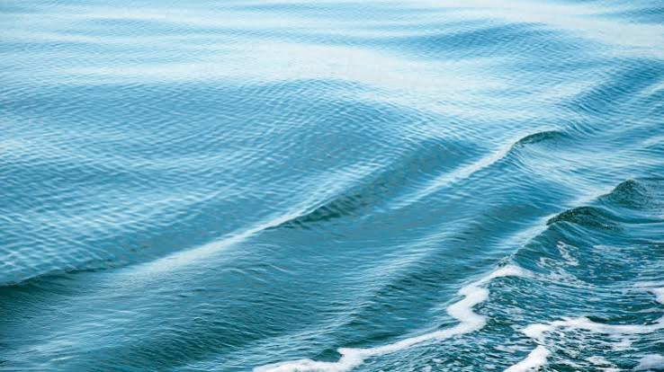

Earth

Earth is the third planet from the Sun and the only known world to support life. About 71% of Earth's surface is covered by water, while the remaining 29% is land, creating a diverse environment of oceans, continents, mountains, forests, and deserts. Earth's atmosphere is mainly made of nitrogen and oxygen, providing the conditions needed for plants, animals, and humans to survive. The planet rotates once every 24 hours, creating day and night, and completes one orbit around the Sun in about 365.25 days, producing the seasons. With its abundant water, protective atmosphere, and suitable temperatures, Earth is a unique and dynamic planet in our Solar System.
Land

Earth's land covers about 29% of the planet's surface, stretching across seven continents: Asia, Africa, North America, South America, Antarctica, Europe, and Australia. These land areas contain a wide variety of landscapes, including towering mountain ranges, vast plains, rolling hills, deserts, forests, grasslands, and frozen regions. Earth's land is rich in natural resources such as minerals, fertile soil, forests, and freshwater lakes, which support agriculture, industry, and human life. It is also home to millions of plant and animal species living in diverse ecosystems, from tropical rainforests and temperate woodlands to dry deserts and icy tundras. Human civilizations have developed on Earth's land for thousands of years, building cities, farms, roads, and cultures across the continents. The diversity of Earth's landscapes and environments makes its land one of the most important features of the planet, supporting biodiversity, shaping climates, and providing the resources needed for life to thrive.
ExploreWater

Earth's water covers about 71% of the planet's surface, making it the defining feature of the planet and essential for all known life. It is divided into a variety of water bodies, including the five oceans, numerous seas, straits, gulfs, bays, rivers, and lakes. The oceans contain about 97% of Earth's water and regulate the planet's climate by storing and transporting heat around the globe. Seas, which are smaller parts of oceans, support rich marine ecosystems and provide important fishing and shipping routes. Straits are narrow waterways that connect larger bodies of water, making them vital passages for international trade and navigation. Rivers and lakes contain most of Earth's accessible freshwater, supplying water for drinking, agriculture, industry, and wildlife. Together, these water bodies support millions of species, influence weather patterns, shape coastlines through erosion, and play a crucial role in maintaining Earth's natural balance and sustaining life.
Explore